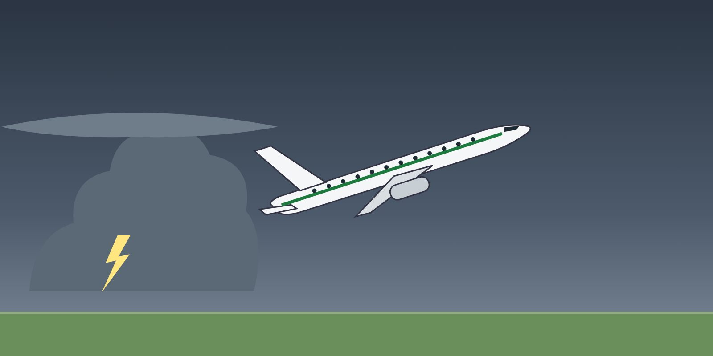

Lesson 03: The Windshear Escape Manoeuvre
Learning objectives
- Apply the generic windshear escape principles.
- Explain why configuration must not be changed.
- Recover and report after the encounter.

When to act
Apply the escape manoeuvre immediately on a windshear warning, or when unacceptable flight path deviations occur — on take-off, initial climb or approach. Do not attempt to land if windshear is encountered on approach.
Generic escape principles
- Maximum thrust / power — go-around or maximum take-off thrust, as your procedure states. Thrust levers may be pushed to the limit if ground contact is imminent, as the type procedure allows.
- Autopilot — as your procedure states (some types allow the autopilot or the flight director to fly the windshear guidance).
- Wings level, pitch up to the windshear pitch target or flight director guidance; if needed, increase pitch up to the stick shaker or pitch limit indicator — respect the stall warning.
- Do not change the configuration — no flap or gear changes until clear of the windshear. Retract speedbrakes.
- The pilot monitoring calls out vertical speed, radio altitude and the trend.
- When clear of windshear: recover to a normal climb, speed and configuration, and report to ATC.
The exact escape manoeuvre is a memory item for each fleet: B737-800 QRH Non-Normal Manoeuvres — Windshear Escape; Q400 and Q200 AOM / QRH windshear procedure. This course gives the principles; your manuals give the procedure.
Why no configuration change
Retracting flaps or gear during the escape reduces lift or adds drag at the worst moment. Gear retraction on some types temporarily increases drag as the doors open. The aircraft stays in its configuration until clear of the windshear.
Reporting
Report the windshear to ATC as soon as possible, with location, altitude and the speed gain or loss (e.g. “windshear on final runway 26, loss of 20 kt at 500 ft”). Your report protects the aircraft behind you. File the company report.
Key takeaways
- Warning or unacceptable deviation: escape immediately; never continue to land.
- Maximum thrust, wings level, pitch to the target / FD, respect the stall warning.
- No configuration change until clear; PM calls vertical speed and radio altitude.
- Report to ATC with location and speed change.
Knowledge check
During a windshear escape, what should be done with flaps and gear?